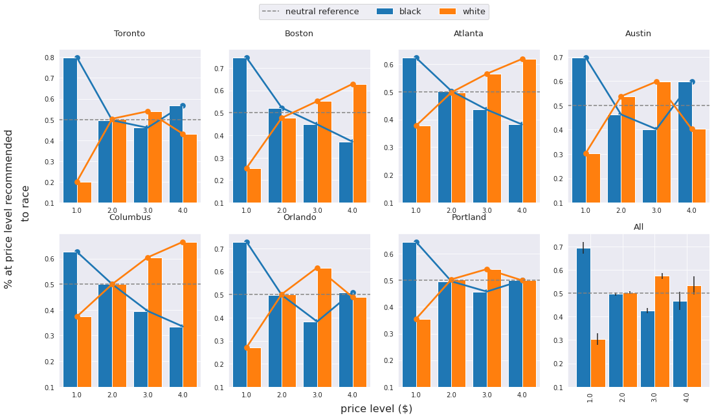
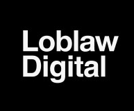
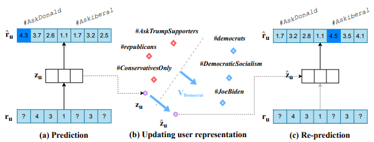
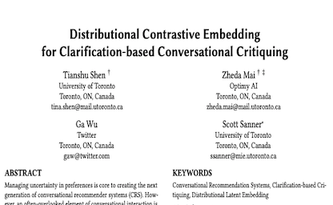
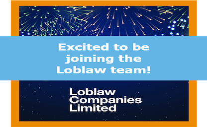
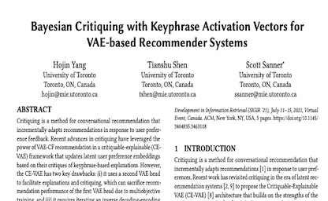
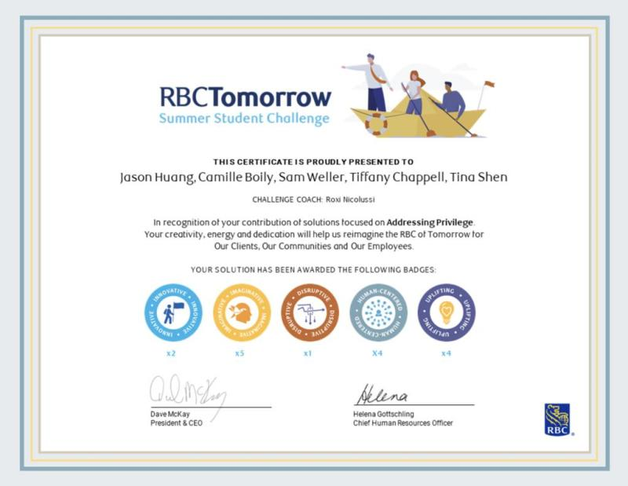
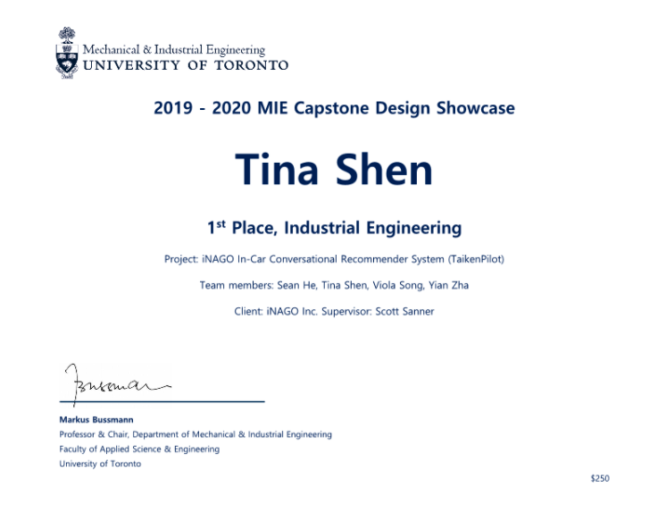
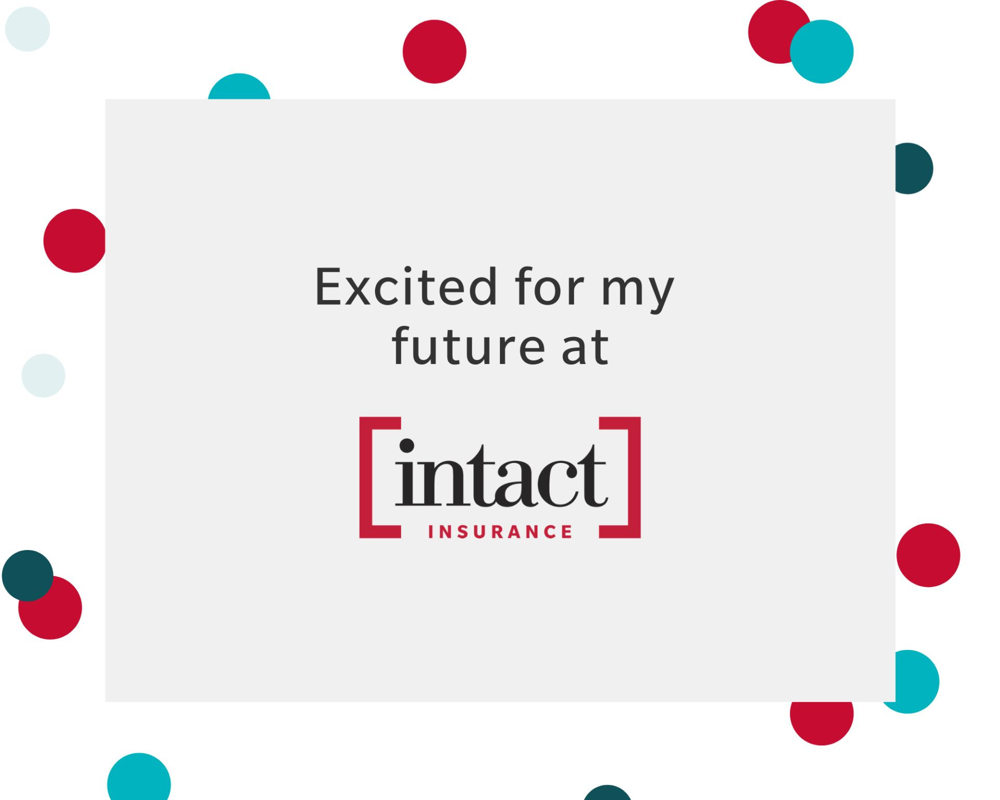

Oct 2022
IPM (Information Processing and Management) 2022 Acceptance
our paper "Towards Understanding and Mitigating Unintended Biases in Language Model-driven Conversational
Recommendation" got accepted by Information Processing & Management Conference 2022.

Aug 2022
MASc Thesis Defense Completion
I am joining Loblaw Digital as a full-time Machine Learning Engineer,
working for the design and implementation of
recommender systems used by Loblaw.
Jan 2022
Full-time MLE Loblaw Digital
I am joining Loblaw Digital as a full-time Machine Learning Engineer,
working for the design and implementation of
recommender systems used by Loblaw.

Mar 2022
SIGIR 2022 Acceptance
our paper "Mitigating the Filter Bubble while Maintaining Relevance: Targeted Diversification with VAE-based Recommender Systems" got accepted
by The 45th International ACM SIGIR Conference on Research and Development in Information Retrieval (SIGIR2022), which has 20% acceptance rate.

Jan 2022
WWW 2022 Acceptance
our paper "Distributional Contrastive Embedding for Clarification-based Conversational Critiquing" got accepted
by TheWebConf2022 (WWW2022), which has 17.7% acceptance rate.

Jan 2022
Internship at Loblaw Digital
I am starting my full-time internship at Loblaw Digital as a Data Scientist, working for the design and implementation of
recommender systems used by Loblaw.

Sep 2021
Internship at Vector Institute
I am starting my part-time internship at the Vector Institute as an applied AI engineer, working as a part of Project Pensive.
My work mainly focuses on conversational recommender systems and enabling user agency for the systems.

April 2021
SIGIR 2021 Acceptance
Our paper "Bayesian Critiquing with Keyphrase Activation Vectors for VAE-based Recommender Systems" got accepted
by SIGIR2021, which has a 27.6% acceptance rate.
Sep 2020
Start pursuing MASc degree
I am now pursuing a MASc degree in Industrial Engineering at the University of Toronto under the supervision of
Prof. Scott Sanner. My
main research area is Modeling Uncertainty in Conversational Recommender Systems.

May 2020
Internship at RBC
I am working now working at RBC as a Data Engineer intern. I have also won the RBC tomorrow challenge award during my
internship.
May 2020
Obtained BASc degree
I am now graduated from the University of Toronto with a BASc degree and Honor (GPA 3.81).

April 2020
First-place Capstone Deisgn Award
Our capstone project, won the first place at the 2019-2020 MIE Capstone Design Showcase.

May 2019
Internship at Intact Financial Corporation
I am now a full-time co-op student at Intact, working as a Software Developer / Test Automation Engineer.